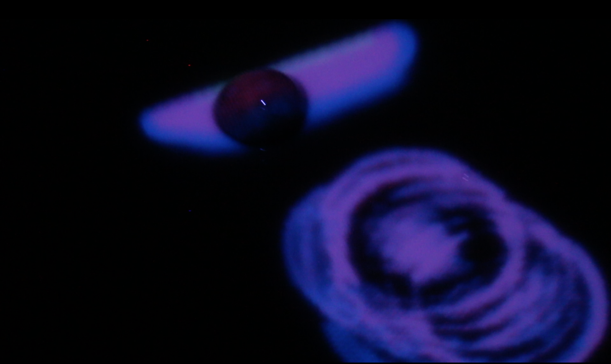
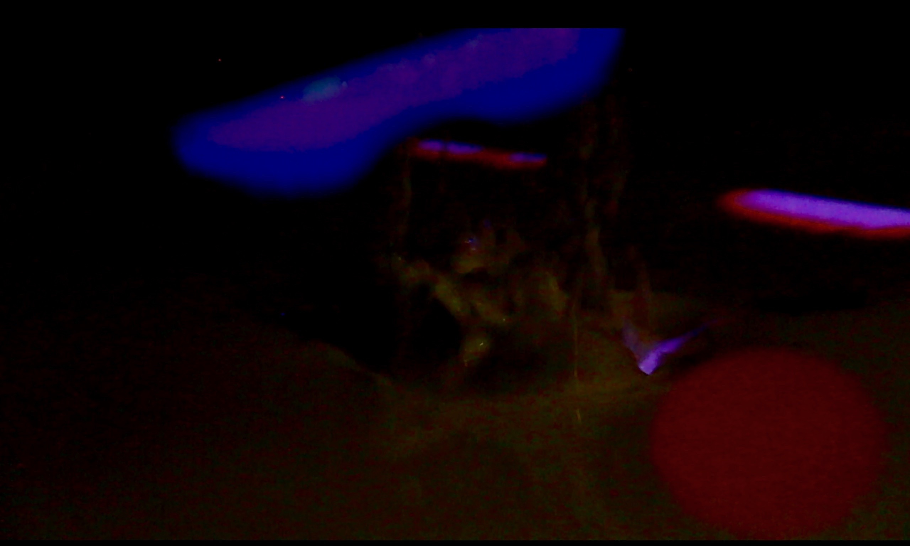

The Wishing Pool, an interactive installation, is inspired by mixed reality movements.
Touching upon tropes & philosophies present in Romantic and Japanese Aesthetics, notably the concepts of sublimity and animism, Wishing Pool is intended to excite a disscusion on the confluence of nature, art, and technology.

latent ripples drawn from object floating across surface

At the moment of interaction between object and water
With the ability to capture the interaction between water and object,
this piece fully augments the expierence of throwing an object into a Wishing well.